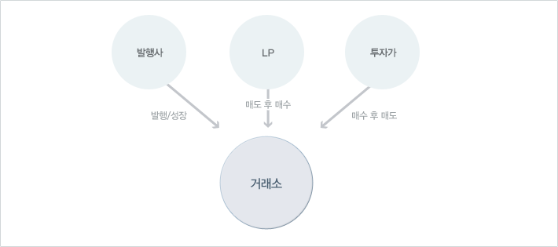

삼성전자 call ELW 가정, 삼성전자 주가 80만원 / 전환비율 0.004 적용 시
삼성전자 call ELW 가정, 삼성전자 주가 80만원 / 전환비율 0.004 적용 시
투자의 새로운 패러다임
ELW : Equity Linked Warrant
주식워런트증권
특정 주식을 사전에 정해놓은 가격 및 만기일에 맞춰 거래할 수 있는 권리가 부여된 증권으로, 상품구조는 주식옵션과 동일한 구조이지만 매매는 주식처럼 투자할 수 있는 상품입니다.
유럽과 홍콩, 싱가포르 등 투자 선진국에서는 제3의 투자수단으로 폭발적인 인기를 누리고 있으며, 고가 우량주를 소액으로 투자할 수 있을 뿐만 아니라 상승장과 하락장 어디에나 수익의 기회가 존재하는 상품입니다.
고가 우량주(예:삼성전자)에 대한 투자수익을 기대하는 소액투자가에게 부담 없는 매수 기회를 제공합니다.
삼성전자 call ELW 가정, 삼성전자 주가 80만원 / 전환비율 0.004 적용 시
| 기초자산 | 삼성전자 | 잔존만기 | 3개월 |
|---|---|---|---|
| 현재가격 | 800,000 원 | 행사가격 | 850,000 원 |
| 이론가격 | 50,000 원(6.25%) | 전환비율 | 0.01% |
투자자는 옵션임에도 불구하고 매수 포지션만 보유하므로 손실은 매입가격 범위 내에서 한정 되지만 수익은 높은 레버리지로 발생 가능합니다.
상대적으로 작은 투자금액으로, 상대적으로 높은 수익을 추구하는 것을 의미합니다.
예를 들어, 콜옵션매입시 주가상승에 대한 권리를 보장 받는 대가로 기초자산의 가치의 일부만을 지불한 후, 대상 기초자산 기준으로 주가상승에 따른 수익을 추구할 수 있어, 기초자산에 동일 금액을 투자할 때에 비해 높은 수익을 추구할 수 있습니다. 물론 주가하락시 손실도 동일하게 기초자산대비 높은 손실을 볼 수 있으나, 옵션의 특성상 손실은 투자금액에 한정됩니다.
레버리지가 높다는 말은 수익이 높은 만큼 위험도 높다는 의미이기도 합니다.
그러나 ELW는 옵션임에도 불구하고 주식 워런트증권시장에서는 투자자는 매수 포지션만 가능하므로 손실은 매입가격에 한정되기 때문에 옵션에 비하면 손실에 대한 위험이 적은 편입니다.
매도 포지션 즉 발행주체가 특정 증권사로 한정되고, 더욱 다양한 종목거래가 가능하다는 점에서 주식옵션과 다릅니다.
직접적인 주식투자에 부담을 가지고 보수적으로 자금을 운용하는 투자자에게 고가 우량주를 기초로 한 ELW에 제한적인 투자를 통해 주가상승시기에 편승한 수익을 창출할 수 있습니다.
| 구분 | 매수시점 | 매도시점 | 비고 |
|---|---|---|---|
| 현재가격 | 750,000 | 869,000 | 15.9% |
| ELW가격 | 28,200 | 78,478 | 178.3% |
풋 주식워런트증권(Put ELW)를 활용하는 경우 하락시기에도 수익 창출기회 가능합니다. 특히 보유 주식의 주가 하락을 대비하여 풋주식워런트증권(Put ELW)를 매입함으로써 하락위험을 최소화 할 수 있습니다.
| 구분 | 매수시점 | 매도시점 | 비고 |
|---|---|---|---|
| 현재가격 | 841,000 | 741,000 | -11.9% |
| ELW가격 | 2,787 | 9,270 | 232.6% |
유동성 공급자제도(LP:Liquidity Provider)란,
투자자의 환금성 부족을 해결하기 위해 상시적으로 유동성을 공급하는것을 의미합니다.
발행시 종목별로 1개 이상의 유동성공급자(LP)를 지정하고 이 LP는 최종거래일까지 일정 호가범위 내에서 최소수량(100워런트) 이상의 매도/매수호가를 LP호가 제출 면제사유가 발생하지 않는 한 상시 제공하기 때문에 환금성에는 문제가 없습니다. (단, 규정에 따라 주가지수외, 주권을 기초자산으로 발행된 ELW의 경우 만기 1월 전부터 호가제출이 제한됩니다.)
ELW발행 및 LP는 자본시장과 금융투자업에 관한 법률상 증권 및 장외 파생상품에 대하여 투자매매업 인가를 받은 결제회원 중 영업용순자본비율(영업용순자본/총위험액)이 300% 이상인 금융투자업자만 가능합니다.
